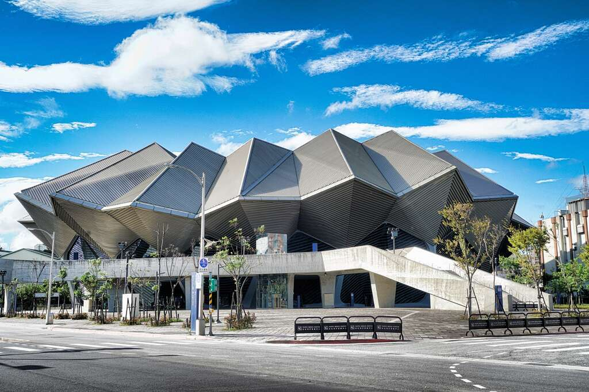

臺北流行音樂中心
臺北流行音樂中心（英語：Taipei Music Center，簡稱北流）是臺北市成立的第一個行政法人，位於台灣臺北市南港區的流行音樂園區。園區內包括表演廳、流行音樂文化館、產業區及戶外開放空間。
臺北流行音樂中心計畫最早為行政院文化建設委員會（今中華民國文化部）為扶植台灣音樂產業而提出的「國際藝術及流行音樂中心」計畫，經國際競圖後最終採用美國建築師事務所RUR Architecture,DPC的設計版本。2013年6月19日動工，北基地表演廳於2019年2月完工、2019年4月底及2020年8月22日舉行測試性演出、2020年8月27日舉行開幕儀式，2020年9月5日正式營運；南基地的流行音樂文化館和產業區於2020年底完工、2021年啟用。
